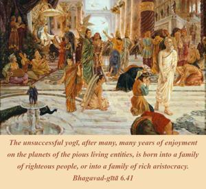

The unsuccessful yogī, after many, many years of enjoyment on the planets of the pious living entities, is born into a family of righteous people, or into a family of rich aristocracy.

The unsuccessful yogīs are divided into two classes: one is fallen after very little progress, and one is fallen after long practice of yoga. The yogī who falls after a short period of practice goes to the higher planets, where pious living entities are allowed to enter. After prolonged life there, one is sent back again to this planet, to take birth in the family of a righteous brāhmaṇa Vaiṣṇava or of aristocratic merchants.
The real purpose of yoga practice is to achieve the highest perfection of Kṛṣṇa consciousness, as explained in the last verse of this chapter. But those who do not persevere to such an extent and who fail because of material allurements are allowed, by the grace of the Lord, to make full utilization of their material propensities. And after that, they are given opportunities to live prosperous lives in righteous or aristocratic families. Those who are born in such families may take advantage of the facilities and try to elevate themselves to full Kṛṣṇa consciousness.